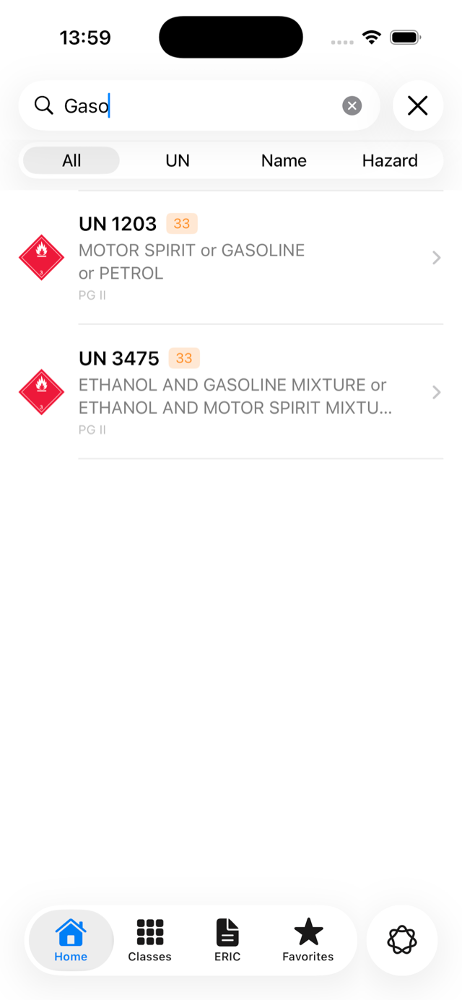
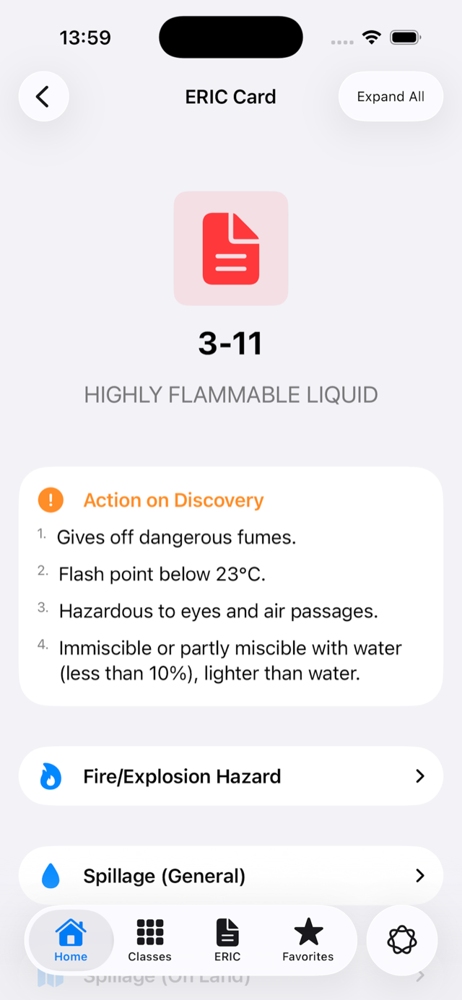
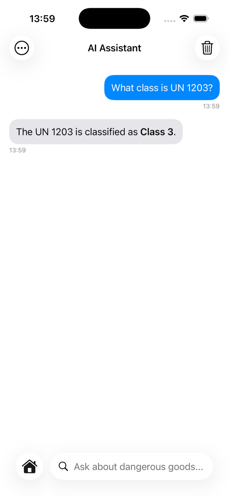

100 % offline
Toda la base de datos vive en el dispositivo. Consulta en túneles, muelles o zonas sin cobertura — nunca se cae.
El ADR 2025 completo en tu bolsillo, sin conexión.
La referencia de mercancías peligrosas para conductores, consejeros de seguridad (DGSA) y servicios de emergencia. Toda la normativa, siempre disponible, aunque no tengas cobertura.
Datos oficiales del ADR 2025, organizados para encontrar lo que buscas en segundos: por número ONU, por nombre o por código de peligro.
Toda la base de datos vive en el dispositivo. Consulta en túneles, muelles o zonas sin cobertura — nunca se cae.
Escribe un número ONU o un nombre y filtra al instante entre 2.939 entradas. Filtros por ONU, nombre y peligro.
236 fichas ERIC con las acciones de primera respuesta: peligros de incendio, derrames y actuación en caso de emergencia.
Los 110 códigos Kemler de la placa naranja, descifrados: sabes qué significa cada número de peligro de un vistazo.
Interfaz y datos en inglés, español, alemán, francés, italiano, ruso, polaco, neerlandés y rumano.
Descárgala sin coste, con anuncios discretos. Una compra opcional los quita para siempre. Sin suscripciones.
Los mismos datos ADR, en el idioma de cada conductor y de cada equipo de emergencia de Europa.
Listas claras, pictogramas reales de cada clase y una jerarquía pensada para encontrar la información crítica de inmediato.


